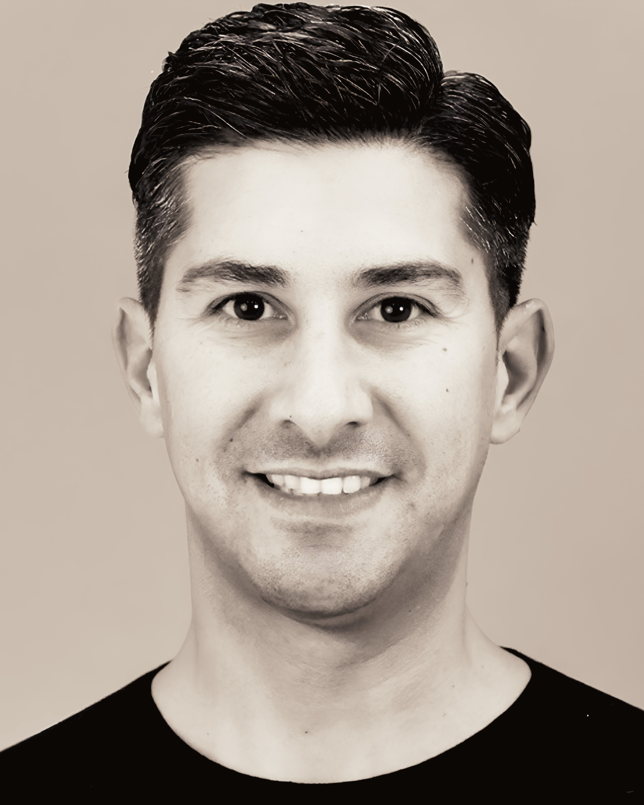

Connecting
Fashion, Business
& People.
Ich verbinde ausgewählte Fashion Brands mit den richtigen Handelspartnern – persönlich, strategisch und mit Gespür für den Markt.
Zusammenarbeit anfragenPersönlich. Klar. Partnerschaftlich.
Gute Mode verdient
starke Verbindungen.
KAVAK Brand Studio ist eine Fashion-Vertriebsagentur für ausgewählte Fashion Brands. Hinter dem Studio stehe ich, Ozan Kavak. Ich begleite Marken dabei, die passenden Handelspartner zu erreichen, Beziehungen aufzubauen und ihre Präsenz im Markt gezielt weiterzuentwickeln.
Mehr über meine Arbeit02 / Curated Portfolio
Selected Brands.
Eigenständige Marken. Eine gemeinsame Leidenschaft für Stil, Qualität & Partnerschaft.
03 / What I Do
360° Full Service.
Persönliche Betreuung über den gesamten Vertriebsprozess – von der Strategie bis zum POS. Mehr über meine Leistungen auf der Expertise-Seite.

04 / Behind the Studio
People first.
Business follows.
Für mich beginnt erfolgreicher Vertrieb mit Verständnis: für die Marke, für den Handel und für die Menschen dahinter. Mit KAVAK Brand Studio setze ich auf direkten Austausch, klare Positionierung und Partnerschaften, die langfristig tragen.
05 / Next Connection
LET'S BUILD
BUSINESS.
Sie möchten eine Marke im Handel entwickeln oder neue Kollektionen kennenlernen? Ich freue mich auf den Austausch.
Kontakt aufnehmen